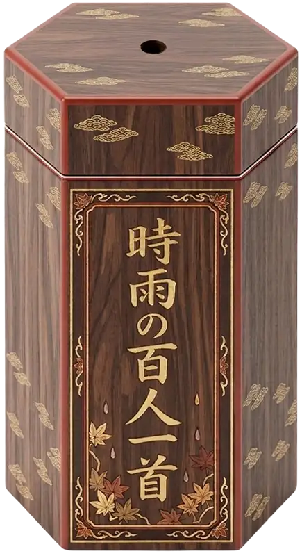
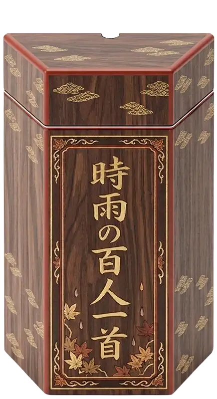

100 poets. 100 poems.
Japanese poetry handed down
for more than a thousand years.Read. Learn. Play.
The poets, Heian court culture,
court ranks and offices,
karuta, and the art of waka.
Omikuji
One of the 100 poems tells
your fortune for today.
If you draw again on the same day,
you get the same poem (result).


100 poems
Click a poem to see its translation, or a number to go to that poem's commentary page.
Search by poet, part of a poem, or romaji to see the results in the Hyakunin Isshu Poem List.
| 1 | 秋の田の かりほの庵の 苫をあらみ 我が衣手は 露にぬれつつ akinotano karihonoihono tomaoarami wagakoromodeha tsuyuninuretsutsu▼ translation 天智天皇（Emperor Tenji） | あきのたの かりほのいほの とまをあらみ わがころもでは つゆにぬれつつ | akinotano karihonoihono tomaoarami wagakoromodeha tsuyuninuretsutsu | |
| 2 | 春過ぎて 夏来にけらし 白妙の 衣ほすてふ 天の香具山 harusugite natsukinikerashi shirotaheno koromohosutefu amanokaguyama▼ translation 持統天皇（Empress Jitō） | はるすぎて なつきにけらし しろたへの ころもほすてふ あまのかぐやま | harusugite natsukinikerashi shirotaheno koromohosutefu amanokaguyama | |
| 3 | あしびきの 山鳥の尾の しだり尾の ながながし夜を ひとりかも寝む ashibikino yamadorinoono shidariono naganagashiyoo hitorikamonemu▼ translation 柿本人麻呂（Kakinomoto no Hitomaro） | あしびきの やまどりのをの しだりをの ながながしよを ひとりかもねむ | ashibikino yamadorinoono shidariono naganagashiyoo hitorikamonemu | |
| 4 | 田子の浦に うちいでてみれば 白妙の 富士の高嶺に 雪は降りつつ tagonourani uchiidetemireba shirotaheno fujinotakaneni yukihafuritsutsu▼ translation 山部赤人（Yamabe no Akahito） | たごのうらに うちいでてみれば しろたへの ふじのたかねに ゆきはふりつつ | tagonourani uchiidetemireba shirotaheno fujinotakaneni yukihafuritsutsu | |
| 5 | 奥山に 紅葉踏み分け 鳴く鹿の 声聞く時ぞ 秋はかなしき okuyamani momijifumiwake nakushikano koekikutokizo akihakanashiki▼ translation 猿丸太夫（Sarumaru Dayū） | おくやまに もみぢふみわけ なくしかの こゑきくときぞ あきはかなしき | okuyamani momijifumiwake nakushikano koekikutokizo akihakanashiki |
Contents
Read, memorize, play, and explore. Choose whatever interests you.
Explore the meaning of all 100 poems and the lives of the 100 poets
Learn the upper verses, lower verses, and kimariji at your own pace
From matches to card-flow drills, a practice ground for players
Sugoroku, quizzes and puzzles, for families and classrooms too
Uncover the devices hidden in the 5-7-5-7-7 form
The human drama and the age behind the poems
Knowing the poets' titles makes the poems even more interesting
See the 100 poems as a map, as emotions, and as a starry sky of words